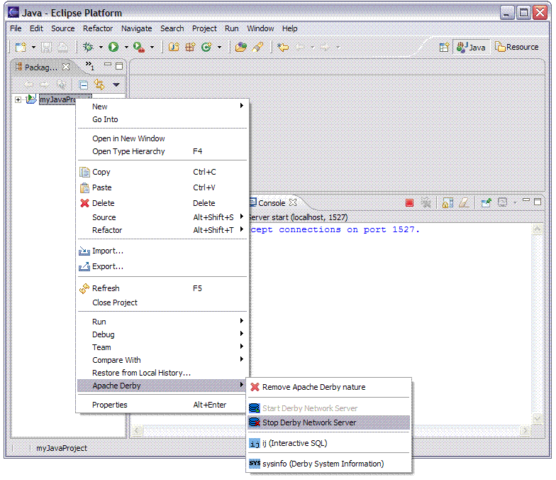

Stopping the Derby Network Server
The Derby Network Server allows multiple applications running in different
Java Virtual Machines to access a single Derby database.
To stop the Derby Network Server:
-
Select the Java project, bring up the context menu and select
the menu item, Apache Derby, Stop Derby Network Server.

-
The pop-up box will appear stating the Apache Derby Network Server is
attempting to be stopped.
-
If the network server shutdown is successful the Console view will
say Shutdown successful.

-
When the Network Server associated with a particular project is shutdown
the green arrow designating a running server which appeared next to the project
name, is no longer visible.